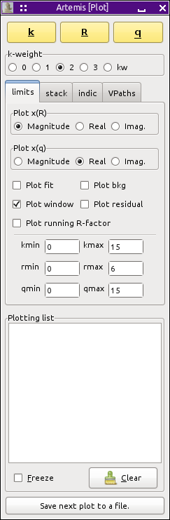

The plot window

The second window that appears when ARTEMIS starts is the Plot
window. An overview of the functionality of this window will be
presented here, but the full picture of how plots are made in
ARTEMIS will have to wait until the Data and Path windows are
explained.
At the top of the Plot window is a row of three buttons used to make
plots in k, R, or q space. These plots will be made using the
contents of the “Plotting list” near the
bottom of the Plot window. The plotting list gets populated with
data, paths, and other plottable items. The details of how the
plotting list gets populated will be discussed later in the document.
Beneath that is a set of radio buttons for setting the k-weighting to
be used in many of the kinds of plots that ARTEMIS makes,
including those made when pressingt he buttons above. Note that these
k-weight values are only used for making
plots. The k-weight values used to evaluate fits are set in the Data
window. The “kw” option uses the arbitrary
(possibly non-integer) k-weighting value specified in the Data window.
Beneath the k-weight buttons is a set of tabs used to control different
aspects of plots. The “limits” tab provides
controls for the most commonly used plotting options.
Because we use a complex Fourier transform, χ(R) and χ(q)
are complex functions. The two sets of radio buttons at the top of
the limits tab are used to specify how χ(R) and χ(q) are
displayed. Becasue a typical plot in ARTEMIS involves many
traces, ARTEMIS does not allow over-plotting of the various
parts of the complex functions in the manner of ATHENA.
Beneath the χ(R) and χ(q) radio buttons are a set of check
buttons used to display additional functions related to the data.
These are:
-
Fit
- When checked, whenever the data is
plotted, the most recent fit will be plotted.
-
Background
- When checked, the background
function will be plotted, but only if it was refined in the most
recent fit.
-
Window
- When checked the window function
will be plotted over the data. The window will be scaled appropriately
for the current k-weight value. When plotting in q, the k-space window
will be used.
-
Residual
- When checked, the difference
between the data and the fit will be plotted.
-
Running R-factor
- When checked, a running
sum of the residual will be plotted, providing another way of
visualizing the misfit.
The last thing on the limits tab is a series of text entry boxes for
setting the plotting range in each of the three spaces.
The other tabs will explained in
the plotting chapter.
The last item on the Plot window is a button labeled
“Save next plot to a file”. When
depressed, the next plot made will write a column data file with
columns representing the traces as they would have been plotted. The
plot will not be shown on the screen. The purpose of this file is to
reproduce a plot from ARTEMIS as closely as possible using some
other plotting program.
|